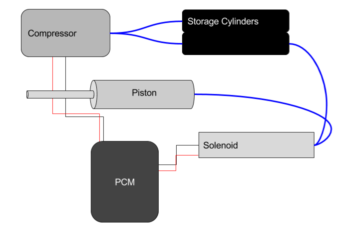
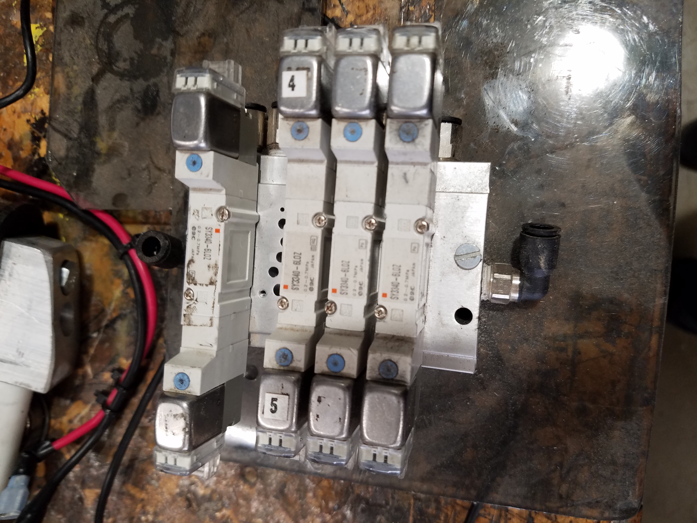

Pneumatic System
The pneumatic system on the robot is often a very important one; it is the flow of air throughout the robot that can be used to fire pistons. Pistons are used not only for certain mechanisms on the robot (such as a retractable arm) but also to shift gears (a small piston is fired to change the gear ratio on the drive train). There are many components involved in getting a pneumatic system up and running, some of which need to be programmed:
Air power starts at the compressor, where air is pulled in and sent to be stored. Usually the air pressure builds up to about 120 psi, and then the compressor will shut off automatically. Starting the compressor only involves one line of code, which we will observe closer later on.
A solenoid is the mechanism that controls when air should be released to fire a piston. There are two types of solenoids that you might use: single and double. Single solenoids can only fire a piston and allow it to retreat automatically; the air can only go one direction. A double solenoid can do the same, except air can also be sucked back in, allowing for more capabilities. For example, if you have a pneumatic arm on the robot that you want to be able to move in and out on command, you will want to use a double solenoid. Check out an example of a bunch of double solenoids together on the right.
Solenoids are programmable, so they need to be connected to the Pneumatics Control Module. The Pneumatic Control Module (or PCM) is a component provided by FIRST that allows the solenoids and compressors to be programmed. There is a port specifically for the positive and negative wires of the compressor, and ten ports that can be used for solenoids. Wires can only be connected to the solenoids with two pin connectors for a positive and negative wire. The other ends can then be stripped and attached to the PCM.
Now that you know the basics of how air moves through the robot, you can learn how to program these components in the next chapter!